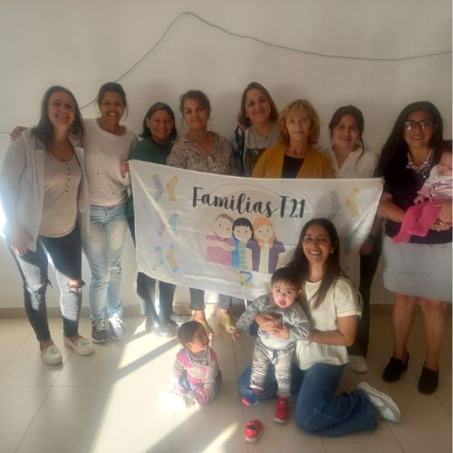
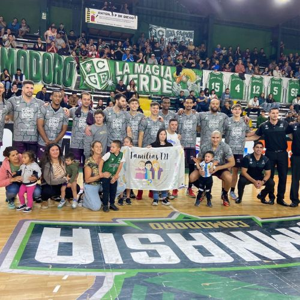
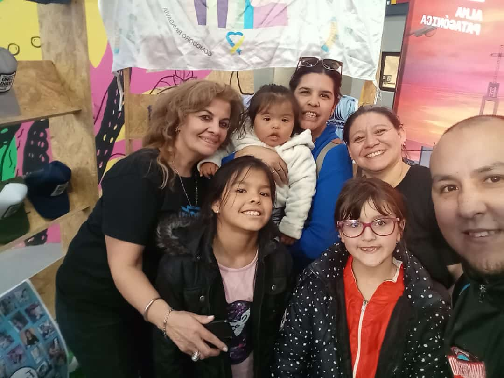
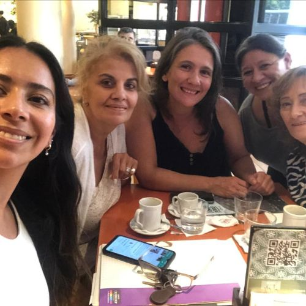
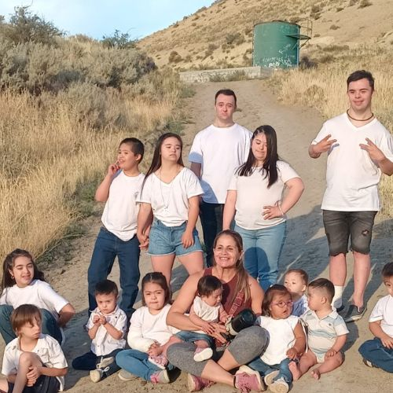
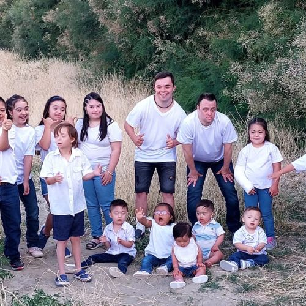
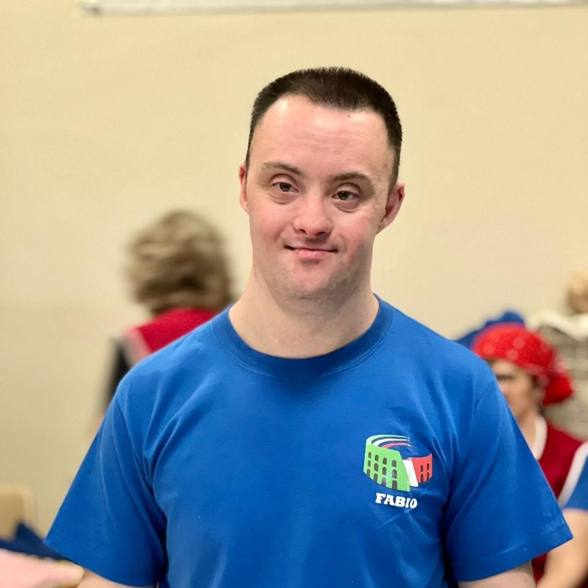
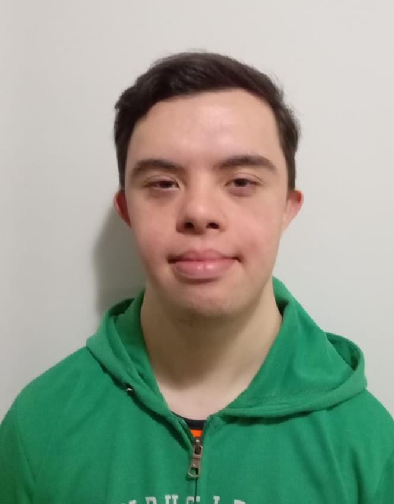

Galería de Momentos
Algunas fotos de nuestras actividades y encuentros







Somos una comunidad de familias unidas por el amor, la inclusión y el respeto.

Acompañar y promover la inclusión plena de las personas con Síndrome de Down, fortaleciendo a las familias y generando espacios de apoyo, aprendizaje y oportunidades que valoren la diversidad.
Construir una sociedad más empática, justa y humana, donde la diversidad sea reconocida como una riqueza y la inclusión sea una realidad en todos los ámbitos de la vida.
Cada paso que damos es fruto del trabajo en comunidad y del amor de las familias que forman parte de la ONG.
Por su labor de concientización e inclusión en Comodoro Rivadavia, destacándose en una importante muestra educativa y social.
Implementación de campañas conjuntas que visibilizan la diversidad y la plena participación de las personas con Síndrome de Down.
Creación de oportunidades reales de formación laboral y autonomía
para jóvenes con Síndrome de Down.
Algunas fotos de nuestras actividades y encuentros





Un podcast de encuentro y reflexión donde familias comparten su camino junto a sus hijos con síndrome de Down.
De la niñez a la adultez, un viaje de aprendizajes, desafíos y amor incondicional.
Presentamos a los integrantes que desean integrarse al mundo laboral.
Sus trayectorias reflejan esfuerzo, compromiso y la capacidad de aportar valor en cualquier entorno.

